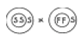

종자기사 (2005-03-20 기출문제)
1과목: 종자생산학
1. 다음 중 잡종강세의 원인을 설명하는 학설이 아닌 것은?
- 초우성설
- 이반인자설
- 복대립 유전자설
- 우성 유전자 연쇄설
(정답률: 알수없음)

2. 다음 중 제출용 종자시료를 추출하는 원칙을 바르게 설명한 것은?
- 시료는 채취자의 임의로 채취한다.
- 시료는 그 종류의 전체 종자를 대표해야 한다.
- 시료는 전체의 중간부위에서 추출한다.
- 시료는 가능한 한 접근이 용이한 부위에서 채취한다.
(정답률: 알수없음)
3. 다음 중 십자화과채소의 채종 적기는?
- 백숙기
- 녹숙기
- 갈숙기
- 고숙기
(정답률: 알수없음)
4. 다음 중 발아검사에서 발아묘의 판별 및 발아율의 검사에 대한 설명으로 잘못된 것은?
- 발아묘의 판별은 정상묘와 비정상묘로 구분한다.
- 정상묘와 비정상묘는 외관으로 판별하며, 정상묘 이외의 묘는 전부 비정상이다.
- 비정상묘는 발아 환경이 좋은 곳에서 정상적인 식물로 발육할 능력이 없는 묘이다.
- 발아율 검정에서 경실종자 및 휴면종자를 제외하고 백분율로 계산한다.
(정답률: 알수없음)
5. 다음 해충 방제법 중 경운 및 윤작 등과 같은 수단은 어디에 속하는가?
- 화학적 방제법
- 생물적 방제법
- 재배학적 방제법
- 기계적·물리적 방제법
(정답률: 알수없음)
6. 종자발아에 관여하는 내적 조건은?
- 온도
- 수분
- 산소
- 종자의 성숙도
(정답률: 알수없음)
7. 부정배를 이용하여 현재 인공종자화 하고 있는 작물로 짝지어진 것은?
- 상추 - 무
- 앨팰퍼 - 당근
- 배추 - 감자
- 당근 - 무
(정답률: 알수없음)
8. 다음 중 순도검사시 정립(순수종자) 비율을 구하는 식을 바르게 표현한 것은?
- (정립의 수 ÷ 정립의 무게)×100
- (협잡물의 무게 ÷ 정립의 무게)×100
- (이종종자의 수 ÷ 정립의 수)×100
- (정립의 무게 ÷ 검사시료의 총 무게)×100
(정답률: 알수없음)
9. 다음 중 테트라졸리움(TTC) 검정에 대한 설명으로 잘못된것은?
- 종자의 발아능을 빨리 판별한다.
- 발아 불량의 원인을 추정할 수 있다.
- 산화효소(peroxidase)의 활성을 추정한다.
- 착색 형태와 착색 정도에 따라 평가한다.
(정답률: 알수없음)
10. 양전화(兩全花) 중에서 타가(교잡)수정을 하는 작물의 경우 타가수정을 하는 원인으로 볼 수 없는 것은?
- 자가불화합성
- 이형예 현상
- 개화기 지연
- 웅성불임성
(정답률: 알수없음)
11. 콩 재배시 종자전염에 의한 병해를 방제하기 위하여 캡탄(Captan)을 분의소독하여 파종하는 경우가 있다. 이때 캡탄은 종자무게의 몇 %로 혼합하는가?
- 0.1%
- 0.3%
- 0.5%
- 1.0%
(정답률: 알수없음)
12. 종자의 휴면이 타파될 때 일어나는 종자내의 생화학적 현상으로 옳지 않은 것은?
- ABA의 증가
- 당 함량 증가
- 아미노산 함량 증가
- 지질 함량 감소
(정답률: 100%)
13. 다음 중 종자 저장에 관한 설명으로 가장 옳은 것은?
- 종자 자체내 습도수준은 공기 중 상대 습도의 영향을 받지 않는다.
- 종자수분함량과 수명과는 정의 상관관계를 갖는다.
- 산소 공급이 충분해야 한다.
- 일반적인 종자저장 조건은 저온 건조이다.
(정답률: 알수없음)
14. 다음 중 가지 종자의 발아율이 크게 떨어지는 가장 큰 원인은?
- 수분 과다
- 수소 부족
- 산소 과다
- 유황 부족
(정답률: 알수없음)
15. 발아시 자엽이나 또는 자엽처럼 양분을 저장하고 있는 기관을 지하에 남아 있게 하는 식물이 아닌 것은?
- 완두
- 콩
- 옥수수
- 벼
(정답률: 알수없음)
16. 다은 중 일반적으로 배휴면(胚休眠)을 하는 종자의 휴면타파법으로 가장 널리 이용하고 있는 방법은?
- 과산화수소 처리
- 열처리
- 저온층적 처리
- 적색광 처리
(정답률: 알수없음)
17. 세포질·핵유전자형 웅성불임을 이용한 고추의 F1채종시 정상세포질을 N, 불임세포질을 S, 핵유전자를 MS와 ms로 표기할 경우 화분친(父系)으로 써야되는 것은?
- Nmsms
- Smsms
- SMSms
- SMSMS
(정답률: 알수없음)
18. 채종재배시 작물발육의 단계별로 적합한 관수방법이 되지 못하는 것은?
- 개화시기까지 영양생장기에는 충분한 물을 공급한다.
- 개화기에 어느 정도의 수분부족은 종자의 결실을 조장 하므로 수분공급을 제한한다.
- 종자발육의 초기단계에서는 관수를 충분히 한다.
- 등숙기에는 관개를 하여 약간의 수분 결핍도 있어서는 안된다.
(정답률: 알수없음)
19. 채종재배의 시비에 대한 설명으로 옳은 것은?
- 종실작물의 채종재배에서는 일반재배에 비하여 시비량을 줄인다.
- 엽채류 채종재배에서는 생육기간이 길어지므로 시비량을 증가시켜야 한다.
- 벼는 일반재배에 비하여 시비량을 늘인다.
- 종자생산포의 비옥도는 종자의 품질과 밀접한 관계가 있다.
(정답률: 알수없음)
20. 다음 중 피자식물의 중복수정에 해당되는 것은？
- 정핵 + 난핵, 정핵 + 극핵
- 정핵 + 조세포, 정핵 + 극핵
- 정핵 + 난핵, 정핵 + 반족세포
- 정핵 + 조세포, 정핵 + 반족세포
(정답률: 알수없음)
2과목: 식물육종학
21. 후대검정(progeny test)을 하는 이유는 무엇인가?
- 후대에서 개체간의 특성을 규명하기 위하여
- 보통 환경에서 식별하기 곤란한 형질을 발현시키기 위하여
- 나타난 변이 중에서 환경변이와 유전변이를 구분하기 위하여
- 환경상관과 유전상관을 구별하기 위하여
(정답률: 알수없음)
22. 다음 중 그 성격상 연속변이에 가장 가까운 것은?
- 질적변이
- 양적변이
- 대립변이
- 꽃색변이
(정답률: 90%)
23. 파자식물은 중복수정을 하는데 수정 후 배와 배유(배젖)의 염색체수를 옳게 나타낸 것은?
- 배는 2n 이고, 배유는 n 이다.
- 배는 n 이고, 배유는 2n 이다.
- 배는 2n 이고, 배유는 3n 이다.
- 배는 2n 이고, 배유는 4n 이다.
(정답률: 알수없음)
24. 유전적으로 동형접합(homo)인 개체가 자가수정하여 형성한 자손에 대한 총칭은 무엇인가?
- 순계
- 품종
- 종
- 영양계
(정답률: 알수없음)
25. 내병성 육종을 효과적으로 수행하기 위하여 필요한 여러 조치들에 대한 설명 중 틀린 것은?
- 가장 병에 약한 계통을 일정한 간격으로 심는다.
- 문제되는 병이 가장 많이 발생하는 계절에 선발해야 한다.
- 병원균을 인공 접종시켜 준다.
- 살균제를 정기적으로 살포해 준다.
(정답률: 알수없음)
26. 웅성불임을 모본으로 한 교배조합들 중 F1이 불임을 나타내는 조합으로 가장 적당한 것은? [개항 모두 앞(♀), 뒤(♂)를 나타냄]

(정답률: 알수없음)
27. 두 품종이 가지고 있는 우량한 특성을 1개체 속에 새로이 조합시키기 위하여 적용할 수 있는 가장 효율적인 육종법은?
- 교잡 육종법
- 돌연변이 육종법
- 분리 육종법
- 염색체 배가 육종법
(정답률: 80%)
28. 도서지역 등 채종포에서 완전히 격리채종을 하였다고 하더라도 품종의 퇴화는 계속 발생하여 특성의 유지가 오래 계속되지 못하는 경우가 많다. 다음 중 도서지역 격리 채종 시의 품종 퇴화 원인에 속하지 않는 것은?
- 자연교잡에 의한 유전적 퇴화
- 근교약세(자식열세)에 의한 퇴화
- 미동유전자의 분리에 의한 퇴화
- 병리적, 생리적 영향에 의한 퇴화
(정답률: 알수없음)
29. 어느 F1의 화분의 유전자 조성이 4AB:1Ab:1aB:4ab 라고 한다면, 이때의 조환가는? (단, 양친의 유전자형은 AABB, aabb임)
- 5%
- 10%
- 20%
- 30%
(정답률: 82%)
30. 선발 총점(Selection score)에 대한 바른 설명은?
- 한 형질의 선발에 대해서만 이용 가능하다.
- 질적 형질에 대해서만 유효하다.
- 선발 지수를 이용하여 구한다.
- 선발 총점이 낮아야 선발대상이 된다.
(정답률: 92%)
31. 인공교배 육종시 춘화처리를 하는 주된 목적은?
- 결실율의 향상
- 수정의 촉진
- 개화기의 조절
- 교배립의 등숙기간 단축
(정답률: 알수없음)
32. 자식성 작물의 변이 집단에서 개체선발 효과를 알기 위한 척도가 되는 것은 어느 것인가?
- 유전력
- 표현형 지배가
- 잡종강세 현상
- 자식약세 현상
(정답률: 알수없음)
33. 변이의 폭을 더욱 확대하기 위하여 사용되는 육종방법은 어느 것인가?
- 순계도태법
- 종·속간 교잡육종법
- 품종간 교잡육종법
- 분리육종법
(정답률: 알수없음)
34. 다음 중 자웅 이화인 것은?
- 오이
- 고추
- 콩
- 담배
(정답률: 알수없음)
35. A계통과 B계통 중 선발대상 형질 X1, X2, X3에 대한 선발지 수를 계산하여 I=10X1 + 20X2 + 30X3를 얻었다. A, B 2계통 중에서 어느 것을 선발하여야 하며, 또한 그 계통의 선발 총합치(Selection score)는 얼마인가?(단, A계통의 X1 = 100, X2 = 50, X3 = 20이고, B계통의 X1 = 50, X2 = 100, X3 = 30이다.)
- A계통, 3,400
- A계통, 2,600
- B계통, 3,400
- B계통, 2,600
(정답률: 82%)
36. 약배양(葯培養)에 의하여 새 품종을 육성하려면 다음 세대 중 어느 것으로부터 약을 채취하는 것이 바람직한가?
- 순계
- F1
- F2
- F3
(정답률: 73%)
37. 반수체식물을 얻기 위해 많이 사용하고 있는 방법은?
- 생장점 배양
- 배 배양
- 원형질체 배양
- 약 배양
(정답률: 알수없음)
38. 신품종의 유전적 퇴화 원인으로 가장 알맞은 것은?
- 결실기의 불량환경, 자연교잡
- 바이러스병 발생, 돌연변이
- 종자의 기계적 혼입, 토양환경 불량
- 자연교잡, 이형 유전자형 분리
(정답률: 알수없음)
39. 기상요인에 의한 재해저항성과 토양요인에 의한 재해저항성을 옳게 표시한 것은?
- 기상요인 - 내냉성, 내염성, 내습성
토양요인 - 내탈립성, 저온발아성, 내산성 - 기상요인 - 내풍성, 내냉성, 내서성
토양요인 - 내염성, 내산성, 내습성 - 기상요인 - 내탈립성, 저온발아성, 내도복성
토양요인 - 내서성, 내풍성, 내비성 - 기상요인 - 내비성, 내도복성, 내산성
토양요인 - 내서성, 내음성, 내하고성
(정답률: 알수없음)
40. 분리육종법을 가장 옳게 설명한 것은?
- 배수성을 유기시켜 만든 변이를 대상으로 한다.
- 교잡에 의한 후대에서 선발하는 육종법이다.
- 순계내에서 선발이 이루어지는 육종법이다.
- 기존 변이 집단을 대상으로 특정한 것을 선출하여 만들어내는 육종법이다.
(정답률: 알수없음)
3과목: 재배원론
41. 다음 중 일반적인 벼의 생육 단계에서 17℃이하의 기온에서 냉해를 받는 가장 민감한 시기는?
- 유묘기
- 분얼기
- 감수분열기
- 등숙기
(정답률: 알수없음)
42. 다음 과수 중에서 인과류(仁果類)에 해당하는 것은?
- 앵두
- 포도
- 감
- 사과
(정답률: 알수없음)
43. 식물의 광합성 연구에 추적자로서 가장 많이 이용되는 방사성 동위원소는?
- 24Na
- 14C
- 60Co
- 45Ca
(정답률: 알수없음)
44. 과수의 생리적 낙과를 효과적으로 방지할 수 있는 방법은?
- 방풍림 설치
- 병충해 방제
- 인공수분
- 합리적 시비
(정답률: 알수없음)
45. 초본식물에서 매트릭포텐셜이 수분포텐셜에 영향을 미치지 못하는 이유는?
- 유기분자가 적기 때문에
- 세포가 적기 때문에
- 액포가 있기 때문에
- 세포막이 있기 때문에
(정답률: 알수없음)
46. 정핵이 직접 관여하지 않는 모체의 일부분에 꽃가루의 영향이 직접 당대에 나타나는 것을 무엇이라 하는가?
- 크세니아
- 메타크세니아
- 무배생식
- 위수정
(정답률: 알수없음)
47. 합리적 간작 작부 체계 방법은?
- 콩 - 땅콩
- 보리 - 콩
- 참외 - 수수
- 목화 - 들깨
(정답률: 알수없음)
48. 관개(물대기)의 효과가 아닌 것은?
- 토양 온도 조절
- 비료 성분의 공급
- 잡초의 발생 조장
- 병충해의 경감
(정답률: 알수없음)
49. 가을 밀을 봄에 파종하면 영양생장만 지속하다가 좌지현상을 일으키는 이유는?
- 생육 기간이 짧아지기 때문이다.
- 저온 처리가 안되었기 때문이다.
- 장일 조건이기 때문이다.
- 고온 단일조건이기 때문이다.
(정답률: 알수없음)
50. 작물재배를 생력화하기 위한 방법이 아닌 것은?
- 농작업의 기계화
- 경지정리
- 생산비 하락
- 재배의 규모화
(정답률: 80%)
51. 번식을 시키기 위해 잎을 이용하는 것은?
- 베고니아
- 고구마
- 포도나무
- 글라디올러스
(정답률: 알수없음)
52. 우량 품종은 주로 어느 특성에 의하여 결정되는가?
- 생태적 특성
- 재배적 특성
- 생리적 특성
- 형태적 특성
(정답률: 알수없음)
53. 지력유지에 가장 좋은 작부 방식은?
- 이동경작
- 휴한농법
- 순환농법
- 연작
(정답률: 알수없음)
54. 북방형 목초의 생육 적온은?
- 6 ∼ 11℃
- 12 ∼ 18℃
- 19 ∼ 24℃
- 25 ∼ 30℃
(정답률: 알수없음)
55. 차조기 잎에서 일장처리를 한 경우 발생되는 결과가 아닌것은?
- 잎의 상반분이 단일처리를 받고 하반분이 암흑에 유지되지 않아도 개화한다.
- 잎의 1개만이 단일처리 되어도 화성이 가능하다.
- 잎의 하반분이 단일처리되면 개화한다.
- 최화 자극은 잎이나 줄기를 통하여 이동한다.
(정답률: 알수없음)
56. 작물의 유연관계를 판단하기 위한 적절한 방법이 아닌것은?
- 면역학적 방법
- 교잡에 의한 방법
- 염색체에 의한 방법
- 육안에 의한 방법
(정답률: 알수없음)
57. 작물의 내충성의 기구가 아닌 것은?
- 비선호성(非選好性)
- 항생성(抗生性)
- 감수성(感受性)
- 내성(耐性)
(정답률: 28%)
58. 봄철 과수원 개화기에 동상해의 응급대책으로 적합하지 않은 것은?
- 저녁에 충분히 관개한다.
- 수증기를 많이 함유한 연기를 발산시킨다.
- 방풍림을 조성하여 찬바람을 막아준다.
- 연소재료를 태워서 공기 온도를 높힌다.
(정답률: 알수없음)
59. 나팔꽃 대목에 고구마 순을 접목시켜 재배하는 목적은?
- 개화유도
- 경엽의 수량증대
- 내건성 증대
- 왜화재배
(정답률: 알수없음)
60. 봄 결구배추를 직파하지 않고 육묘하여 이식하는 주된이유는?
- 종자절약
- 용수절약
- 추대방지
- 생육촉진
(정답률: 알수없음)
4과목: 식물보호학
61. 나비목에 대한 설명이 옳은 것은?
- 몸 전체 또는 일부가 비늘로 덮혀 있다.
- 성충의 큰 턱은 거의 퇴화되어 있다.
- 유충은 대부분 부식성이다.
- 불완전변태를 한다.
(정답률: 알수없음)
62. 세균에 의한 식물병과 바이러스에 의해 발생하는 식물병의 차이점을 올바르게 설명한 것은 어느 것인가?
- 세균병은 물에 의해서 전염되고 바이러스병은 곤충에 의해 전염된다.
- 세균병은 살균제로 방제할 수 있지만 바이러스병은 불가능하다.
- 세균병은 기주범위가 넓지만 바이러스병은 기주범위가 좁다.
- 세균병은 고온기에 발생하고 바이러스병은 저온기에 발생한다.
(정답률: 알수없음)
63. 농약 살포 도중에 비산이 적다는 의미의 고형시용제는 어느 것인가?
- 분제
- 입제
- DL분제
- FD제
(정답률: 72%)
64. 식물기생성 선충만 가지고 있는 특징적인 형태 구조는?
- 구침
- 근육
- 소화기관
- 신경
(정답률: 50%)
65. 작물 병의 발생에 미치는 토양조건을 가장 적절하게 설명한 것은?
- 토양 온도가 낮고 토양이 건조할 때에 병 발생이 많다.
- 토양 온도가 낮고, 습도가 높으며, 일조가 강할 때에 병 발생이 많다.
- 많은 강수량이나 적정한 강수량이 병. 해충. 잡초의 발생 억제에 영향을 미친다.
- 토양 습도, 토양 온도, 토양의 종류와 성질, 거름 및 토양미생물 간의 상호관계 등에 의하여 병 발생에 영향을 준다.
(정답률: 알수없음)
66. 작물을 흡즙하여 피해를 일으키는 곤충은?
- 진딧물
- 메뚜기
- 딱정벌레
- 나방류의 유충
(정답률: 알수없음)
67. 유효 성분의 효력을 증진시킬 목적으로 사용되는 약제는?
- 증량제
- 전착제
- 유화제
- 협력제
(정답률: 알수없음)
68. 다음 중 무기농약에 속하는 것은?
- 구리제
- 피레드린(pyrethrin)계
- 네오아소진
- 니코친(nicotine)
(정답률: 알수없음)
69. 일반적인 대부분의 문제 잡초는 C4 광합성을 하여 C3 광합성을 하는 작물과의 경합에서 유리한 조건을 갖게 되나, 초기 생육에서는 잡초의 광합성 효율이 작물과 차이를 보이게 된다. 이때의 제한요인은?
- 일조량
- 온도
- 수분
- 양분
(정답률: 알수없음)
70. 식물병의 진단방법 중 싹을 틔워서 병징을 발현시켜 발병 유무를 진단하는 것은?
- 표징
- 병징
- 최아
- 유전자
(정답률: 알수없음)
71. 우리나라는 다년생 논잡초가 우점하는 군락형으로 천이가 일어나고 있는데 이런 현상의 원인이 아닌 것은?
- 잡초의 휴면성
- 잡초방제법의 변화
- 손 제초법의 감소
- 재배시기 변동
(정답률: 알수없음)
72. 생물적 방제가 아닌 것은?
- 백강균을 이용하여 솔나방 유충을 방제한다.
- 트랩을 설치하여 바퀴를 방제한다.
- 거미를 이용하여 벼멸구를 방제한다.
- 먹좀벌을 이용하여 솔잎혹파리를 방제한다.
(정답률: 85%)
73. 오이 모자이크병 등 채소의 주요 바이러스를 매개하기 때문에 육묘시 망사를 씌우는 등의 조치를 필요로 하는 곤충은?
- 진드기
- 진딧물
- 깍지벌레
- 나비
(정답률: 82%)
74. 곤충의 소화관의 중장과 후장의 경계 부위에 개구되어 노폐물을 장속으로 배설하는 기관은?
- 침샘
- 횡연합기관간
- 배혈관
- 말피기관
(정답률: 84%)
75. 병원체 변이의 기작이 아닌 것은?
- 이핵 현상
- 준유성생식
- 이수체 형성
- 일액 현상
(정답률: 알수없음)
76. 잡초 경합 한계기는?
- 초관형성기까지
- 작물 전생육기간의 첫 1/3∼1/2기간
- 생식생장기부터 수확기까지
- 수확기 전후
(정답률: 알수없음)
77. 다음 중 종자소독제가 아닌 것은?
- 지오람제 (호마이)
- 베노람제 (벤레이트티)
- 프로라츠제 (스포탁)
- 비피제 (밧사)
(정답률: 알수없음)
78. 건답 직파 논에서 잡초 발생이 많은 가장 큰 이유는?
- 벼의 입묘율이 불량해지기 때문에
- 수분 부족이 발생하기 쉽기 때문에
- 물에 의한 잡초 발생 억제 효과가 약해지기 때문에
- 벼의 파종시기가 앞당겨져 발생 초종이 단순하기 때문에
(정답률: 알수없음)
79. 식물병을 성립시키는 3가지 요소를 바르게 연결한 것은?
- 병원균 - 곤충 - 잡초
- 세균 - 곰팡이 - 바이러스
- 기주 - 병원체 - 환경
- 작물 - 토양 - 환경
(정답률: 알수없음)
80. 나비목 밤나방과에 속하는데 극히 잡식성이다. 고추를 비롯한 기주식물의 땅에 닿는 부분을 잘라 먹거나 대개는 완전히 자르지 않고 줄기를 약간 남기는데 1년생 유묘에 피해가 크다. 어떤 해충인가?
- 총채벌레
- 배추벼룩잎벌레
- 도둑나방
- 거세미나방
(정답률: 알수없음)
5과목: 종자관련법규
81. 다음 중 국가품종목록 등재 대상 작물로 맞는 것은?
- 고구마
- 고추
- 참깨
- 감자
(정답률: 알수없음)
82. 종자산업법상의 벌칙 규정 중 시·도지사가 종자업 등록취소 또는 영업 정지를 명할 수 있는 사유에 해당되지않는 것은?
- 종자업의 등록을 한 날부터 3월이내에 사업에 착수하지 않거나 정당한 사유없이 3월이상 계속하여 휴업한 때
- 종자업자가 종자업의 등록을 한 후 각 품목별 시설기준에 미달한 때
- 사위 기타 부정한 방법으로 종자업의 등록을 한 때
- 종자업자가 법에 규정한 위반하여 종자관리사를 두지 아니한 때
(정답률: 알수없음)
83. 품종보호 요건을 보면 " 일반인에게 알려져 있는 품종과 명확하게 구별되는 경우에는 구별성을 갖춘 것으로 본다"라고 되어 있는데 다음 중 일반인에게 알려져 있는 품종이 아닌 것은?
- 유통되고 있는 품종
- 농림부령이 정하는 종자산업에 관련된 협회에 등록되어있는 품종
- 품종목록에 등재되어 있는 품종
- 품종보호를 출원하였으나 심사 후 등록되지 않은 품종
(정답률: 알수없음)
84. 종자관리사의 법정 업무에 해당하지 않는 것은?
- 종자회사가 생산하는 종자에 대한 종자검사
- 종자업자가 생산하는 종자에 대한 생산포장의 병해검사
- 국가품종목록 등재 품종의 성능 유지관리
- 종자검사에 합격한 종자에 대한 보증표시
(정답률: 알수없음)
85. 영업정지를 받고도 종자업을 계속 영위한 자에게 해당되는 벌칙은?
- 1년 이하의 징역 또는 1천만원 이하의 벌금
- 2년 이하의 징역 또는 2천만원 이하의 벌금
- 3년 이하의 징역 또는 3천만원 이하의 벌금
- 4년 이하의 징역 또는 4천만원 이하의 벌금
(정답률: 알수없음)
86. 종자산업법상 선출원에 대한 설명 중 맞는 것은?
- 동일 품종에 대하여 다른 날에 2 이상의 품종보호출원이 있는 때에는 먼저 출원한 자만이 품종보호를 받을 수 있다.
- 동일 품종에 대하여 같은 날에 2 이상의 품종보호출원이 있는 때에는 시간적으로 먼저 출원한 자가 품종보호를 받을 수 있다.
- 동일 품종에 대해 같은 날 2인이상의 출원이 있는 경우 두사람 모두 보호를 받을 수 있다.
- 동일 품종에 대해 다른 날에 2 이상의 품종보호출원이 있는 경우 두사람간에 협의를 하여야 한다.
(정답률: 알수없음)
87. 다음 중 품종보호의 요건으로 적합하지 않은 것은?
- 적합성
- 신규성
- 균일성
- 안정성
(정답률: 알수없음)
88. 농협에서 벼의 보급종을 생산하려 한다. 포장검사는 몇 회 실시하여야 하는가?
- 1회
- 2회
- 3회
- 4회
(정답률: 50%)
89. 종자업을 영위하고자 할 때 종자관리사 보유의 예외에 해당하는 작물로 짝지워져 있는 것은?
- 화훼, 사료작물, 목초작물
- 특용작물, 뽕, 벼
- 화훼, 사료작물, 토마토
- 해조류, 사료작물, 참다래
(정답률: 알수없음)
90. 종자산업법에 의한 실시의 정의에 포함되지 않는 것은?
- 보호품종 종자의 수출입 행위
- 보호품종 종자의 생산·조제 행위
- 보호품종 종자의 대여 행위
- 보호품종을 이용한 신품종 육성 행위
(정답률: 알수없음)
91. 농림부장관이 관계공무원으로 하여금 종자업자나 판매업자의 영업장소·사무소 등에 출입하여 조사하게 할 수 있는 내용이 아닌 것은?
- 당해 시설
- 관계 서류나 장부
- 종자
- 자산 상태
(정답률: 70%)
92. 종자업 등록없이 종자를 생산·판매할 수 있는 자로 맞는 것은?
- 농업인
- 외국에 등록된 종자업자
- 품종보호권자
- 시·도지사
(정답률: 알수없음)
93. 품종보호권의 존속기간으로 올바른 것은?
- 설정등록이 있는 날부터 15년(과수 및 임목은 20년)
- 설정등록이 있는 날부터 20년(과수 및 임목은 25년)
- 설정등록이 있는 날부터 15년(과수 및 임목은 25년)
- 설정등록이 있는 날부터 20년(과수 및 임목은 20년)
(정답률: 알수없음)
94. 품종보호출원시에 그 보호품종의 내용을 알지 못하고 그 보호품종을 육성하거나 사업의 준비를 하고 있는 자가 향유할 수 있는 권한은?
- 독점판매권
- 전용실시권
- 통상실시권
- 일시사용권
(정답률: 알수없음)
95. 종자산업법상 출원 품종의 심사 절차로서 바른 것은?
- 출원 - 공개 - 심사 - 등록 - 공고
- 출원 - 공개 - 공고 - 심사 - 등록
- 출원 - 공개 - 심사 - 공고 - 등록
- 출원 - 심사 - 공개 - 공고 - 등록
(정답률: 알수없음)
96. 농림부장관은 과태료부과 징수권을 누구에게 위임하였는가?
- 농촌진흥청장
- 국립농산물품질관리원장
- 시·도지사
- 종자관리소장
(정답률: 60%)
97. 다음 중 종자보증에 관한 설명으로 틀린 것은?
- 종자보증은 농림부장관이 행하는 국가보증과 종자관리사가 행하는 자체보증으로 구분한다.
- 농림부장관은 종자관리사가 직무를 태만히 하거나 중대한 과오를 범한 때에는 그 자격을 취소할 수 있다.
- 채소종자의 보증 유효기간은 1년을 원칙으로 한다.
- 버섯종균의 보증 유효기간은 1개월을 원칙으로 한다.
(정답률: 알수없음)
98. 벼의 품종 이름을 등록하려 할 때 요구조건에 가장 적합한 것은?
- 풍년벼
- 1234
- 가공용벼
- 이천벼
(정답률: 알수없음)
99. 100kg의 포장물에서 소집단의 크기가 400대인 벼에서 1차 시료를 채취할 경우 몇 개소 이상의 1차 시료를 채취하여야 하는가?
- 총 20개소 이상
- 총 30개소 이상
- 총 40개소 이상
- 총 50개소 이상
(정답률: 알수없음)
100. 제3국에 최초의 품종보호출원을 한 후 동일 품종을 대한민국에 보호출원하여 우선권을 주장하고자 하는 자는 최초 출원일 다음 날부터 어느 기간 이내에 품종보호출원서를 제출하여야만 하는가?
- 6개월
- 1년
- 2년
- 3년
(정답률: 알수없음)